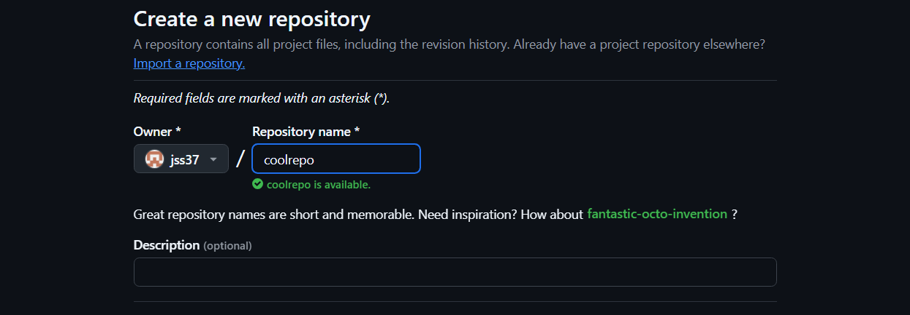
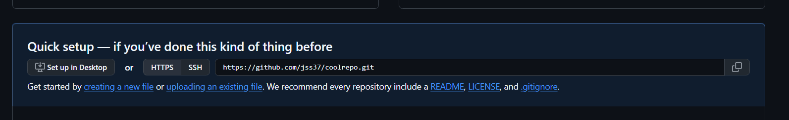
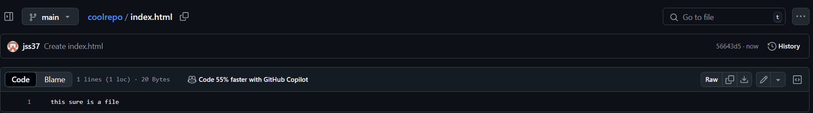

first, make a new repository on GitHub
if you've already made your html file, you can select upload, otherwise, select create a new file
make sure your file is named 'index.html', if it isn't click on the file and go to the little pen/pencil icon thing to edit the code and rename it
under 'Settings', and then 'Pages', select 'Deploy from branch', and then 'Save'